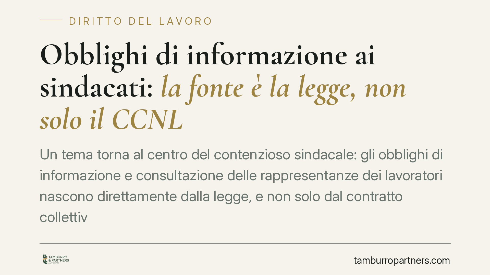

Obblighi di informazione ai sindacati: la fonte è la legge, non solo il CCNL
Un tema torna al centro del contenzioso sindacale: gli obblighi di informazione e consultazione delle rappresentanze dei lavoratori nascono direttamente dalla legge, e non solo dal contratto collettivo. Il rifiuto radicale di ogni confronto può integrare condotta antisindacale ex art. 28 dello Statuto. Per le imprese oltre soglia dimensionale è una questione da presidiare con metodo.

Il punto giuridico
La domanda è ricorrente: un datore di lavoro è tenuto a informare e consultare le rappresentanze dei lavoratori solo quando lo prevede il contratto collettivo applicato, oppure l'obbligo esiste comunque?
La risposta corretta è che una parte di questi obblighi ha fonte legale autonoma. Il D.lgs. 6 febbraio 2007, n. 25, di attuazione della direttiva 2002/14/CE, istituisce un quadro generale di informazione e consultazione dei lavoratori nelle imprese che superano una determinata soglia dimensionale. Si tratta di un obbligo che discende dalla legge: il contratto collettivo può disciplinarne modalità e sedi, ma non è la fonte esclusiva dell'obbligo stesso.
Inquadramento normativo
L'art. 4 del D.lgs. 25/2007 individua l'oggetto degli obblighi: informazione sull'andamento e sulla situazione economica dell'impresa, sull'evoluzione dell'occupazione e, in particolare, consultazione sulle decisioni che possano comportare rilevanti cambiamenti nell'organizzazione del lavoro o nei contratti. L'informazione deve essere fornita in tempi e con contenuti tali da consentire un confronto effettivo; la consultazione implica un esame congiunto, non una mera comunicazione unilaterale.
Quanto all'ambito di applicazione, il decreto si rivolge alle imprese che occupano almeno 50 lavoratori. Il criterio di computo non è la fotografia di un singolo giorno: l'art. 3 del D.lgs. 25/2007 fa riferimento alla media dei lavoratori impiegati nell'impresa, calcolata secondo le modalità ivi previste. È un dettaglio decisivo: una lettura affrettata della soglia può indurre a ritenersi esclusi quando non lo si è.
Sul versante rimediale, l'art. 28 dello Statuto dei lavoratori (legge n. 300/1970) offre alle organizzazioni sindacali uno strumento processuale specifico contro i comportamenti del datore diretti a impedire o limitare l'esercizio della libertà e dell'attività sindacale. È un procedimento speciale, rapido, che si svolge in forma sommaria e può condurre a un decreto immediatamente esecutivo di cessazione della condotta e rimozione degli effetti. La sua efficacia sta proprio nella celerità della tutela, non in presunte alterazioni delle regole probatorie ordinarie: l'onere di allegare e provare i fatti resta a carico di chi ricorre, secondo i principi generali.
Cosa cambia in concreto
La distinzione da tenere ferma è netta e va comunicata con chiarezza a chi gestisce le relazioni industriali.
Esiste un obbligo di confronto: informare e consultare quando la legge lo impone. Non esiste, invece, un obbligo di accordo. Il datore che siede al tavolo, fornisce le informazioni dovute e conduce la consultazione in modo effettivo non è tenuto ad accettare le richieste sindacali. Può legittimamente non raggiungere l'intesa.
Il problema sorge quando manca il confronto in radice: rifiutare ogni interlocuzione, non convocare, non fornire alcuna informazione, svuotare la consultazione riducendola a comunicazione formale a decisione già presa.
Da qui la seconda distinzione, altrettanto rilevante. Un singolo inadempimento su tempi o contenuti non equivale automaticamente a condotta antisindacale. Il rifiuto sistematico e globale di ogni confronto, invece, può integrare la fattispecie dell'art. 28, perché incide sulla stessa possibilità di esercizio dell'azione sindacale. La linea di confine passa per la sistematicità, l'effettività del confronto e la buona fede nella trattativa.
Cosa fare in concreto
- Verificate la soglia dimensionale con il criterio corretto. Non fermatevi al dato del momento: calcolate la media dei lavoratori occupati secondo l'art. 3 del D.lgs. 25/2007, includendo le tipologie contrattuali rilevanti.
- Mappate gli obblighi di fonte legale, non solo quelli del CCNL. Ricostruite separatamente ciò che impone la legge e ciò che aggiunge il contratto collettivo: sono due binari che vanno rispettati entrambi.
- Documentate il confronto. Convocazioni, ordini del giorno, verbali e materiali informativi trasmessi sono la prova che l'informazione e la consultazione ci sono state, anche in assenza di accordo.
- Consultate prima di decidere, non dopo. La consultazione deve avvenire quando la decisione è ancora aperta al contributo delle rappresentanze; una consultazione a scelta già compiuta rischia di essere qualificata come meramente apparente.
- In caso di ricorso ex art. 28, muovetevi subito. Il procedimento è rapido: consigliamo di raccogliere immediatamente la documentazione del confronto già svolto e di predisporre le difese senza attendere.
---
*Contributo informativo a cura di Tamburro & Partners - Avv. Giuseppe Tamburro. Non costituisce parere legale.*
Ogni storia di lavoro ha i suoi tempi.
Se gestisci HR e vuoi un confronto su contenzioso, ispezioni o licenziamenti, scrivi allo studio. Ti rispondiamo entro un giorno lavorativo.